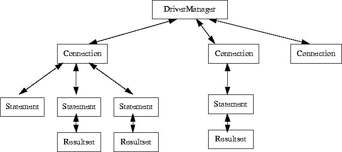
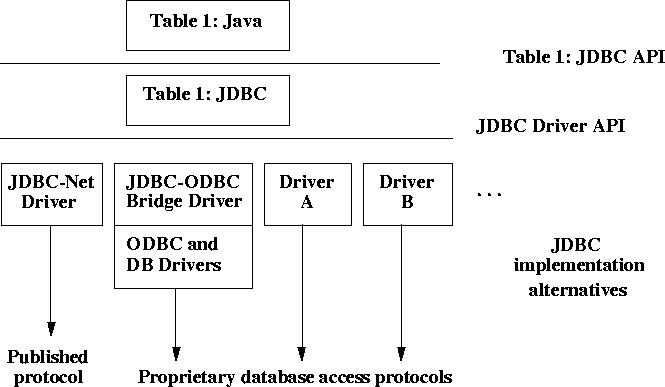

3 Overview of the major interfaces
There are two major sets of interfaces. First there is a JDBC API for application writers. Second
there is a lower level JDBC Driver API.
3.1 The JDBC API
The JDBC API is expressed as a series of abstract Java interfaces that allow an application programmer
to open connections to particular databases, execute SQL statements, and process the
results.

The most important interfaces are:
- java.sql.DriverManager which handles loading of drivers and provides support for
creating new database connections
- java.sql.Connection which represents a connection to a particular database
- java.sql.Statement which acts as a container for executing a SQL statement on a given
connection
- java.sql.ResultSet which controls access to the row results of a given Statement
The java.sql.Statement interface has two important sub-types: java.sql.PreparedStatement for
executing a pre-compiled SQL statement, and java.sql.CallableStatement for executing a call
to a database stored procedure.
The following chapters provide more information on how these interfaces work. See the separate
JDBC API documents for complete documentation of JDBC interfaces and classes.
3.2 The JDBC Driver Interface

The java.sql.Driver interface is fully defined in Chapter 9. For the most part the database drivers
simply need to provide implementations of the abstract classes provided by the JDBC API.
Specifically, each driver must provide implementations of java.sql.Connection, java.sql.Statement,
java.sql.PreparedStatement, java.sql.CallableStatement, and java.sql.ResultSet.
In addition, each database driver needs to provide a class which implements the java.sql.Driver
interface used by the generic java.sql.DriverManager class when it needs to locate a driver for
a particular database URL.
JavaSoft is providing an implementation of JDBC on top of ODBC, shown as the JDBC-ODBC
bridge in the picture. Since JDBC is patterned after ODBC, this implementation is small and
efficient.
Another useful driver is one that goes directly to a DBMS-independent network protocol. It
would be desirable to publish the protocol to allow multiple server implementations, e.g. on top
of ODBC or on specific DBMSs (although there are already products that use a fixed protocol
such as this, we are not yet trying to standardize it). Only a few optimizations are needed on
the client side, e.g. for schema caching and tuple look-ahead, and the JDBC Manager itself is
very small and efficient as well. The net result is a very small and fast all-Java client side implementation
that speaks to any server speaking the published protocol.
Contents | Prev | Next
jdbc@wombat.eng.sun.com
or
jdbc-odbc@wombat.eng.sun.com
Copyright © 1996, 1997 Sun Microsystems, Inc. All rights reserved.